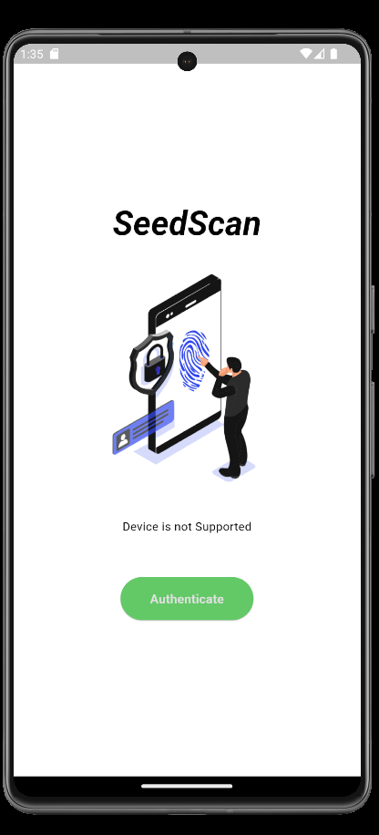
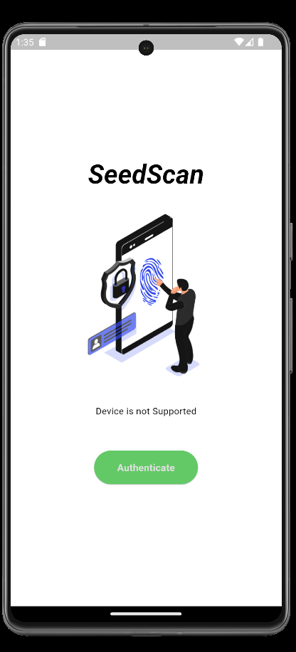
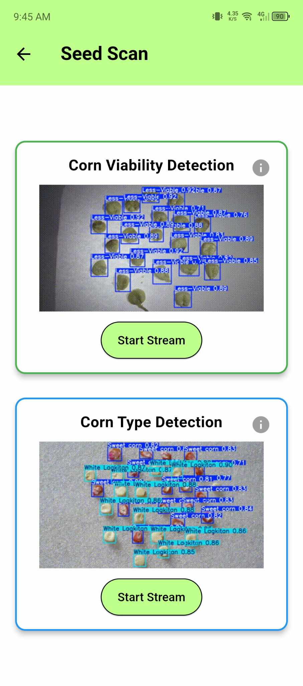
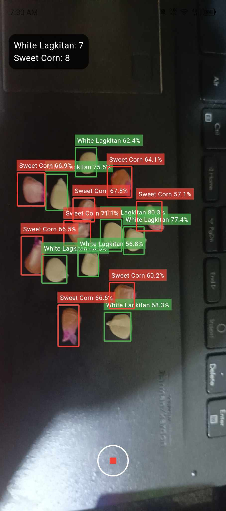
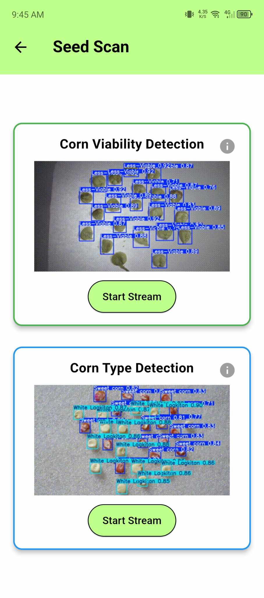
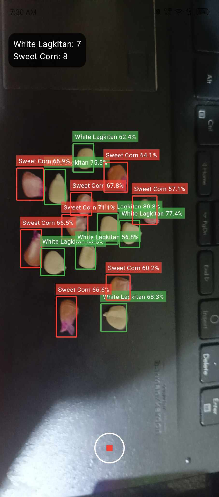

SeedScan
A Flutter application designed for easy and interactive detection of corn viability and type using YOLO-based machine learning.
Features
- Corn Viability Detection: Identifies viable corn seeds.
- Corn Type Detection: Determines the type of corn.
- Harvest Estimation: Predicts potential harvest based on results.
- Data History: Stores detection readings.
- Graphical Representations: Displays results visually.
- User-Friendly Interface: Easy navigation and interaction.
- Information Pop-Ups: Provides additional details for detections.
Screenshots
 

 



Datasets
Model Training Details:
- Corn Viability Model: 11,340 images
- Corn Type Model: 8,856 images

Model Performance

Requirements
- Flutter SDK: Version 3.22.3 or later
- Dart: Version 2.17.0 or later
- Android Studio & Visual Studio Code
Installation Instructions
git clone 'https://github.com/lightdarkmaster/seedscan'
cd seedscan
flutter pub get
flutter run